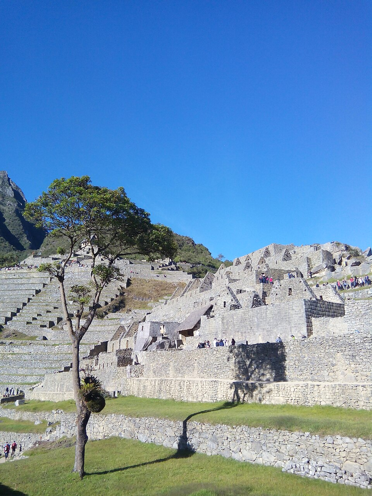

Inca civilization and Qhapaq Ñan
The Inca state linked communities, production zones, sacred places, and administrative centres across the Andes. Its roads and monumental architecture drew on earlier Andean histories and the work of many communities. Machu Picchu is one estate within this wider history.
Maps of the wider area
Open a whole sheet, zoom into its details, or inspect the original. These maps retain their own dates, legends and geographic scope.
More official maps and reference sheets
- Qhapaq Ñan inscribed road segments
Official inventory and map references for inscribed segments, including Cusco-region components. Inscribed segments represent part of the wider historical network. UNESCO World Heritage Centre and nominating States Parties
Cusco and the roads outward
Cusco’s Inca rulers reshaped an already inhabited place into a capital of royal, governmental and sacred spaces. The surviving streets and walls now sit within a living city altered again during colonial and later periods. The imperial city is therefore one powerful layer in a history that began earlier and continued beyond Inca rule.
Evidence: whc.unesco.org [1] ↗ · cambridge.org [2] ↗ · pubmed.ncbi.nlm.nih.gov [3] ↗
Roads extended those connections across varied terrain. Bridges, stairs, paving and drainage made movement possible, while associated institutions organized communication and supplies. The network incorporated older routes as well as Inca works. Following a road means following engineering, political administration and the communities whose landscapes it crossed, rather than imagining a single uniform experience of empire.
Evidence: whc.unesco.org [1] ↗ · repositorio.cultura.gob.pe [2] ↗ · consultasenlinea.mincetur.gob.pe [3] ↗ · cdn.www.gob.pe [4] ↗
.jpg){kind=link}

Machu Picchu’s buildings and terraces occupy a steep ridge. Water collection, fountains and drainage made this built landscape possible alongside the better-known stone architecture.
Machu Picchu, Peru — Sasha India. Image source · CC BY 2.0. Wikimedia-generated 960-pixel preview; no local cropping or retouching. This image is not subject to the atlas’s noncommercial license.
undefined
All drawn lines are schematic, not surveyed route geometry. Connection status describes the cited relationship, not positional accuracy. No chronology or impact footprint is inferred. Node locations retain the source precision stated below.
| From | To | Relationship | Status | Evidence |
|---|---|---|---|---|
| Quito | Huánuco Pampa | Northern highland corridor; intermediate sites omitted | Documented connection | Source |
| Huánuco Pampa | Cusco | Cusco–Quito corridor via Huánuco Pampa | Documented connection | Source |
| Cusco | Mendoza region | Southern highland axis toward Mendoza region | Documented connection | Source |
| Place | Longitude | Latitude | Location precision | Evidence |
|---|---|---|---|---|
| Quito | -78.51° | -0.22° | Rounded to 0.01 degree from UNESCO reference S0 13 12 W78 30 43.5; public locality anchor only | Source |
| Huánuco Pampa | -76.81° | -9.88° | Rounded to 0.01 degree from published Incawasi reference 09 52 31 S / 076 48 43 W within Huánuco Pampa; public site anchor, not a road junction | Source |
| Cusco | -71.98° | -13.52° | Rounded to 0.01 degree from World Heritage earthen-architecture inventory reference S13 31 19.992 W71 58 59.988; city anchor only | Source |
| Mendoza region | -68.83° | -32.88° | Rounded to 0.01 degree from official Mendoza education reference for Plaza Pedro del Castillo (-32.879761, -68.828262); modern locality anchor, not an Inca endpoint | Source |
Capital, state, and varied communities
Cusco was the imperial capital, with religious, governmental, and royal spaces forming a planned urban ensemble. The fifteenth-century Inca remodeling continued a much longer local settlement history. Surviving streets and walls now form part of a living city shaped again during colonial and later periods. Source 1 ↗
Imperial chronology remains a research question rather than a reliable date stamp for every site. Ogburn's 2012 analysis questions how colonial writers converted accounts of conquest into a linear sequence and argues for independent radiocarbon frameworks. Regional expansion, a ruler's life, construction, and a sample's age are different events. Source 1 ↗
Diversity within the state is visible at a small scale in Machu Picchu's burial sample. The 2023 genomic study supports a varied attendant community rather than a population drawn solely from the immediate Cusco region. Its authors combine ancestry results with archaeology and history; their sampled individuals should not stand for every imperial population. Source 1 ↗
Roads and the institutions along them
UNESCO describes four main routes originating at Cusco and linking with smaller roads. The wider network incorporated pre-Inca infrastructure and supported communication, movement, supplies, and state administration. Bridges, steps, paving, and drainage adapted to different terrains. The World Heritage property selects representative sections and associated places; it is not the full surviving network. Source 1 ↗
Peru's road-registration guide identifies a major highland longitudinal axis between Quito and Mendoza through Cusco. Huánuco Pampa's official inventory places that administrative centre on the Cusco–Quito corridor. The diagram below reduces this long system to four named reference places and three corridor connections; many intermediate settlements and branches are omitted. Source 1 ↗ Source 2 ↗
| Site / structure | Dates and methods | Organization / architecture | Limits and sources |
|---|---|---|---|
| Road engineering | Built and adapted over centuries; major imperial expansion in the fifteenth century. | Variable surfaces, retaining walls, stairs, bridges, and drains negotiated sharply different environments. | Do not assign one construction date or identical design to the whole network. |
| Longitudinal and connecting roads | Inca-period organization incorporates earlier routes. | The highland spine was complemented by coastal routes, transverse connections, and links between drainage basins. | The small diagram shows a selected corridor, not all four imperial quarters or a complete road inventory. |
| Huánuco Pampa: administration and storage | Inca administrative centre; no precise foundation year established here. | A planned highland centre on the Cusco–Quito road, with large storage facilities. Colcas included circular and rectangular buildings. | Storehouse totals are archaeological inventories, not counts of resident households. |
| A living cultural network | Ancient routes with continuing community relationships. | Selected road sections remain associated with local knowledge, maintenance practices, exchange, and cultural traditions. | The end of the Inca state did not end Andean peoples or all uses of its roads. |
Religion and ritual
State ceremony linked the ruler and Inti, the Sun, with offerings and sacred places. Smithsonian interpretation also emphasizes Pachamama and roads as connections with a spiritual universe. Imperial worship and local sacred relationships should not be flattened into one identical practice everywhere. Inca-period religion is reconstructed through material remains, historical testimony, and living Andean traditions, each with a different relationship to the past. Source 1 ↗ Source 2 ↗
Languages: Quechua and a debated court language
Quechua was important in the Inca world, but the empire incorporated speakers of many languages. Aymara and Puquina also belong to debates over its linguistic history. Cerrón-Palomino proposes Puquina connections for sparse names and reports of a special court language; this is a historical-linguistic hypothesis, not a demonstrated language for every ruler or resident. Language affiliation, political allegiance, and biological ancestry are separate questions. Source 1 ↗ Source 2 ↗ Source 3 ↗
Rise, conquest, and continuing peoples
A kingdom centred on Cusco expanded into Tawantinsuyu through military campaigns and state integration, especially during the fifteenth century. Conventional royal dates are being revised against radiocarbon evidence. Spanish invasion, Indigenous alliances, and the capture of Atahualpa in 1532 disrupted imperial rule; conquest and colonial transformation were processes rather than the disappearance of Andean peoples. Languages, communities, and traditions continued beyond the empire. Source 1 ↗ Source 2 ↗ Source 3 ↗
Places, finds and events on the map
The linked scholarly sources provide background. Site-level findings are mapped only with qualified dates and locations; this page does not invent settlement dots.
Further reading
Follow the history outward through these accounts. Encyclopedia links offer orientation; the studies and institutional sources provide the evidence behind this guide.
- Wikipedia — Inca Empire ↗ English
- Peru Ministry of Culture — Guía de identificación y registro del Qhapaq Ñan, 2023, highland longitudinal road section ↗ Spanish
Official heritage source; linked for further reading, not reproduced.
- UNESCO — City of Cuzco ↗
- Ogburn 2012 — Reconceiving the Chronology of Inca Imperial Expansion ↗
- Salazar et al. 2023 — Insights into the genetic histories and lifeways of Machu Picchu's occupants ↗
Linked writing and images remain with their rights holders. Linking does not grant permission to copy. Sources, attributions & licenses lists the atlas’s sources and separately licensed material.
Research source
Research source and access status ↗
The original third-party research response is retained privately. This public guide presents independently written, source-linked material; raw research responses are not redistributed.
Page sources
- UNESCO — City of Cuzco ↗
- Ogburn 2012 — Reconceiving the Chronology of Inca Imperial Expansion ↗
- Salazar et al. 2023 — Insights into the genetic histories and lifeways of Machu Picchu's occupants ↗
- UNESCO — Qhapaq Ñan, Andean Road System ↗
- Peru Ministry of Culture — Guía de identificación y registro del Qhapaq Ñan, 2023, highland longitudinal road section ↗
- MINCETUR — Zona Arqueológica Monumental de Huánuco Pampa ↗
- Peru Ministry of Culture — Huánuco Pampa, colcas and Inca road ↗
- UNESCO — Ville de Quito, public geographic reference ↗
- Pino Matos 2005 — El ushnu y la organización espacial astronómica en la sierra central del Chinchaysuyu; published Huánuco Pampa reference ↗
- World Heritage inventory of earthen architecture, 2012 — Cuzco coordinates ↗
- Mendoza official education resources — Plaza Pedro del Castillo, public geographic reference ↗
- Smithsonian NMAI — The Great Inka Road: administration, religion, and expansion ↗
- Smithsonian NMAI — Sacred Roads ↗
- Cerrón-Palomino 2012 — Unravelling the Enigma of the Particular Language of the Incas ↗
- Cerrón-Palomino 2010 — Contactos y desplazamientos lingüísticos en los Andes centro-sureños ↗
- Smithsonian NMAI — Inka Road History Timeline: Spanish invasion and colonial period ↗
The editorial summaries above use linked scholarly and institutional sources. Research leads do not replace the atlas’s individually reviewed evidence records.